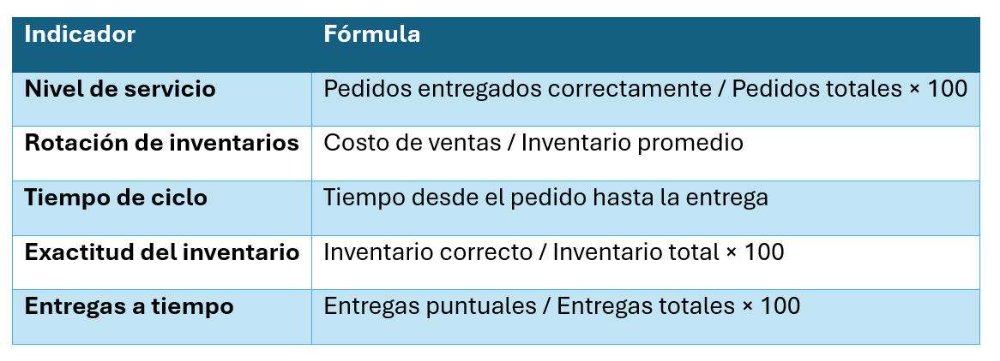

Unidad I · Tema 1.6
Principales indicadores logísticos (KPI)
Los KPI (indicadores clave de desempeño) permiten cuantificar el desempeño de una operación logística para identificar desviaciones y sustentar la toma de decisiones informada.
Indicadores y fórmulas principales
Los más utilizados en la industria textil son:
| Indicador | Fórmula |
|---|---|
| Nivel de servicio |
\(\text{Pedidos entregados correctamente} / \text{Pedidos totales} \times 100\)
|
| Rotación de inventarios |
\(\text{Costo de ventas} / \text{Inventario promedio}\)
|
| Tiempo de ciclo | Tiempo transcurrido desde el pedido hasta la entrega al cliente |
| Exactitud del inventario |
\(\text{Inventario correcto} / \text{Inventario total} \times 100\)
|
| Entregas a tiempo |
\(\text{Entregas puntuales} / \text{Entregas totales} \times 100\)
|

Comprueba tu comprensión
Calcula y analiza cómo un índice de entregas a tiempo (On-Time Delivery) por debajo del 85 % afecta la relación con tiendas departamentales y la rotación de prendas.